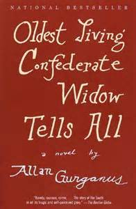

Reviewed by Sophie Xiong
Recently “epic” has become a grossly misused word due to the trendiness of brash exaggeration. Reading Oldest Living Confederate Widow Tells All (Ivy Books), however, restores the meaning of an epic. Allan Gurganus’ monumental 875-page first novel chronicles the American Civil War era through the dynamic and unrestrained narration of Lucy Marsden, a self-described “veteran of the veteran.” Carried off at age 15 to wed a grizzled PTSD-plagued “Captain” Marsden, Lucy, a 99-year-old when the storytelling begins, unloads generations of tales both shattering and strange. She speaks not only for herself and her family, but also for her hometown, the fictional Falls, North Carolina (which Gurganus revisits in his newest novel Local Souls). She channels residents across the spectrum, from Lady, who would rather lurk as a ghost in the charred remains of her southern-belle past than confront the fallen South, to Castalia, a formidable slave-turned-entrepreneur who stares down the social barriers of the times. Despite the tragedies, Lucy does not summon the past with disdain or melancholy. Instead, she fights the darkness with levity, stating “he who laughs- lasts.”
Other war widows may have used their stories to teach morality or elicit wide-eyed sympathy, but not Lucy. We open the book to a chapter titled “Fight Song,” as Lucy introduces her mischievous nature to the reader and to the reporter, “-So, you come to pump me for my news before I got too little wind to spill news with? Well, as for secrets, I admit I am rich, child. That’s all the riches I got.” As we read on, we discover she is not the type to gloss over indecencies with a wilting sigh. For brutal encounters like her honeymoon night, she maintains a flippant tone and roasts the Captain’s performance concurrently as she describes her bleeding innards. But underneath all her sassiness, there is a deeper urge to articulate the madness of war and its shrapnel into home life. “[Telling stories] is more for them, my missing ones. If I should spill, it’s like… to represent them. They’d want it known, I reckon. Even the Captain would. Seems my family left me here to kind of keep their place. I’m one old parchment bookmark stuck right in the middle of a chapter where our particular group nodded off.”
Along with capturing the vibrancy of a storyteller’s diction, Gurganus draws special curiosity to the shifting meanings of colors. Lucy’s school assignment to interview a victim of “Our Struggle for Southern Independence” results in a story she titles “Black, White, and Lilac,” which examines how color meanings alter as social boundaries weaken. As Sherman’s march blazes down southward, color identity is warped, and the Marsdens’ former slaves are left to reinvent themselves. When Willie Marsden (not old or mad enough to have self-promoted) makes his journey north to atone for sins, he wanders dazed into an unnatural blue dye which has permeated the polluted waters of the industrializing North. Paralyzed by this color, he sees in the fish the faces of men killed in the war. “Swimming in place, they reverse to look up at the mill’s four smokestacks, dark towers billowing darkness, shooting flames, spreading a yellow soot that takes itself to be some golden future.” In “The Tribe That Answers,” Lucy takes on Castalia’s voice to paint Africa through lenses “green, mustardy and gray” to her soon-to-be-ex-mistress. The color red becomes a complex study, representing both holiness and death, as her tribe’s slave ship is painted the same color as their sacred bird.
This narrative swings from decade to decade, century to century, and anachronistic passages sometimes jostle the reader to reflect on current social issues. Right after Lucy details a chance encounter between the Captain and his war buddy, she gives a profound comparison of those who fought on the side that lost: the battered Confederate vets milling around the town square and the shell-shocked Vietnam veterans staring dead-eyed into a mall fountain. “These moping boys were not necessarily no geniuses before getting shipped to Asia (or Maryland). Maybe that’s why they were the ones that went. They grew up in churches, grew up being told: Freedom is worth saving, ladies and children first, standards, decency, rules, gentlemanly honor…. Then, shipped to the front, they were told: to preserve home standards and women and kids, they should bypass all they’ve been taught… this might mean hurting non-home women and kids and gents… The boys’ brain motors still worked, chugging hard to try and fit all this new stuff together, find a way of blending what seemed like opposites. But, once home, the brain rebelled… motor still goes but all circuits are blackened, fused. So as a vet, you sit in the middle of the Courthouse Square… or near the Mall fountain… You people-watch the shoppers, Americans you gave your all to save. You see them call their children away from your spot. You see they’re scared of what your saving them has done to you, guy.”
Gurganus’ Lucy has materialized into a comic sage through his acute diction and provided us a meticulous storyteller difficult to find today. Though, at times, Lucy Marsden’s one-line clinchers at the end of sections can sum up the story a bit too cheaply. Also, historical buffs will clench their teeth at Lucy/Castalia’s recounting of the journey over to America (the slave trade had ended long before she claimed to have been shipped over). Those hesitant to pick up this book due to its daunting length, however, should know that each story is easily defined and sectioned. So settle into your comfy chair and find out about “Simon’s Splendid Pocket Watch” or Lucy’s reason as to “Why I Say Ain’t.”